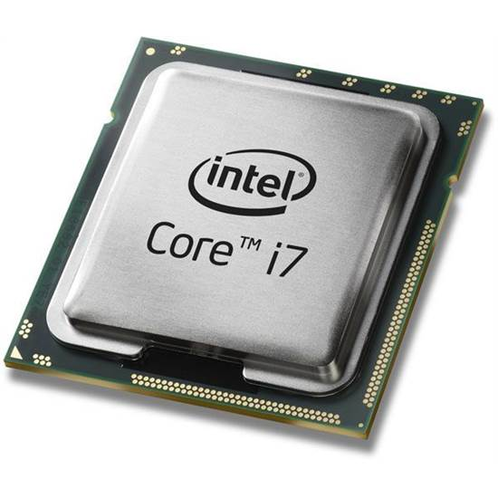

หน่วยประมวลผลกลาง คืออะไร มีอะไรบ้าง
เราคงจะเคยได้ยินคำว่า “หน่วยประมวลผลกลาง” หลายคนอยากจะทราบว่า หน่วยประมวลผลกลางคืออะไร และประกอบไปด้วยอะไร วันนี้เรามาทำความเข้าใจเกี่ยวกับ หน่วยประมวลผลกลาง กันครับ
หน่วยประมวลผลกลาง ภาษาอังกฤษก็คือ Central Processing Unit หรือที่เราคุ้นเคยกันในชื่อ CPU นั้นเอง มาถึงตรงนี้แล้วหลายคนน่าจะคุ้นเคยชื่อกับคำว่า CPU กันแล้วใช้ไหมครับ
หน่วยประมวลผลกลาง เป็นวงจรอิเลคทรอนิกส์ที่ทำงาน หรือประมวลผล ตามชุดของคำสั่งเครื่องจากซอฟต์แวร์ คำนี้เริ่มใช้ในอุตสาหกรรมคอมพิวเตอร์ตั้งแต่ต้นศตวรรษ 1960s
หน่วยประมวลผลเปรียบเสมือนเป็นสมองของคอมพิวเตอร์ ในการทำหน้าที่ตัดสินใจหรือคำนวณ จากคำสั่งที่ได้รับมา เช่น การเปรียบเทียบ การกระทำการทางคณิตศาสตร์ ฯลฯ